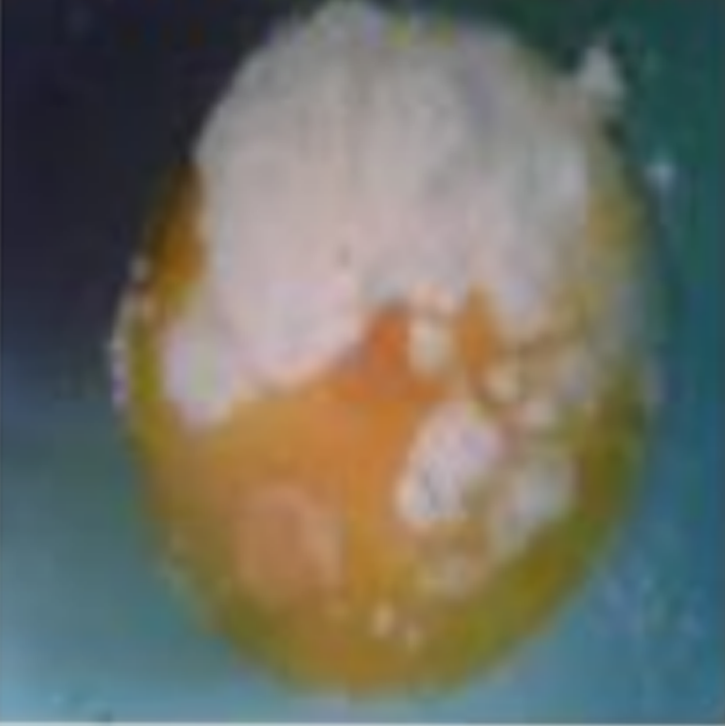
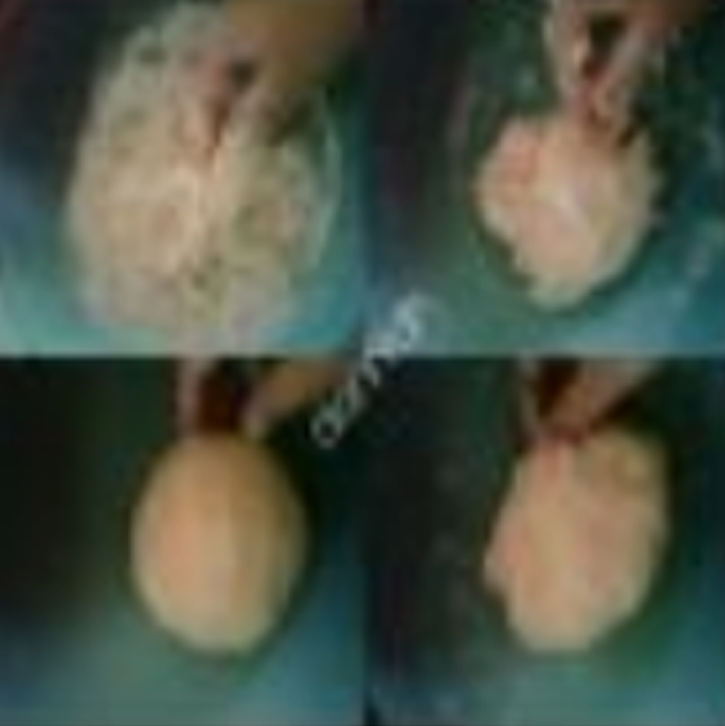
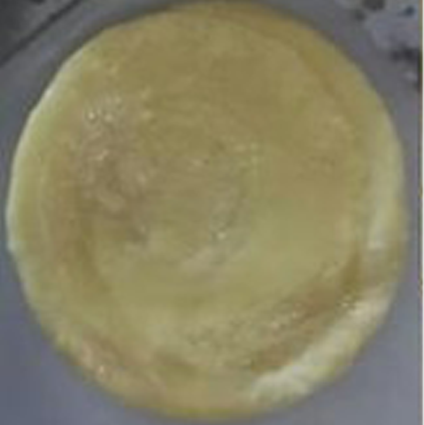

Resep Kue Maryam
Bahan-bahan:

- 250gr Tepung Terigu
- 1 Butir Telur
- 3sdm margarin,lelehkan
- 100ml Air hangat
- 2sdm Susu bubuk(opsional)
- 1/2sdt Garam
- Margarin leleh untuk olesan
- Minyak untuk merendam
Langkah-langkah:
1.Campurkan adonan menjadi satu menggunakan garpu/balloon whisk

3.Uleni adonan hingga kalis

3.Kalisnya adonan roti maryam tidak sekalis roti - roti lain ya,kira kira begini cukup
